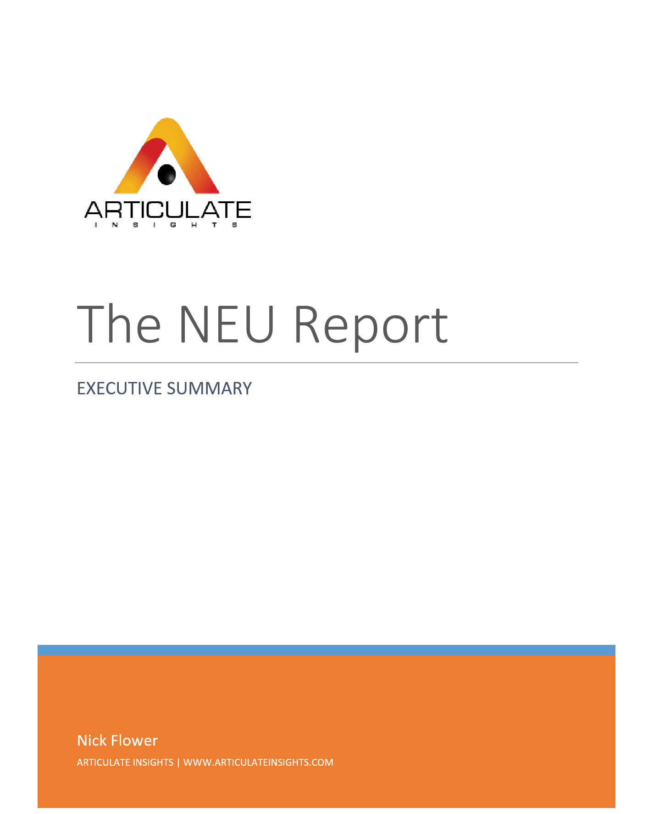

Overview
Articulate offers a range of products and services, such as security minded log-analysis applications, process automation, and custom development for your enterprise demands.
We choose the right tool for the job, whether that's linux scripts, .NET backends, or the database of your choosing. Our services are tailored to your specifications.
Additionally, we offer specialized research and consulting related to software architecture design, and information security best practices.
Products
PTT
See your Windows Security Event Log data organized chronologically and grouped by Process. See which events were emitted by which processes and how it fits together in a tree, or view events as a timeline that can be grouped by Event Id or Date. Comes with rich filtering functionality allowing you to create complex queries.
Available on Windows 10
Let's Search!
A completely offline Japanese-English dictionary with fast search, kanji-by-radical lookup, examples, and complete verb conjugations.
Available on
Windows 10
Lyricall

Smart Playlists for Spotify - create playlists that will automatically populate using user-defined rules, and which draw songs from user-defined sources. Updates every night at midnight UTC.
Available in all modern browsers at
https://lyricall.net
Services
Research
Want to know which of your current back-office processes can be automated or made more efficient with software? Or perhaps you're thinking about upgrading a legacy system to a more modern software stack and want to know how much effort it would really require before you sign off on it. Let us do this research for you.
Custom Solutions
Done your research and now want to follow through with automating away any workflow inefficiencies?
Need a better way to keep track of some data?
Want to move to your in-house solutions to the cloud?
We can give you a quote and build out your custom software demands.

Training
Want to know about modern information-security best practices? We can help teach everyone from the executives to the secretaries about modern InfoSec and what it means for their own day-to-day jobs.
Or if you have programmers, we can dive deeper and learn about secure computing methods, such as data validation, proper access control, adversarial architectural models and process isolation.
Or maybe they just want a lesson in C# and PostgreSQL.
We're happy to offer seminars and workshops in any of our specialities.
About
Nick Flower has been developing software for more than a decade, and has experience in all modern and widely used programming languages, including C, C#, Java, Javascript, Scheme and Python. He has worked with numerous frontend and backend technologies and has worked with a multitude of firms in industries as diverse as defense, international pharmaceuticals, and digital forensics on cutting edge technologies.